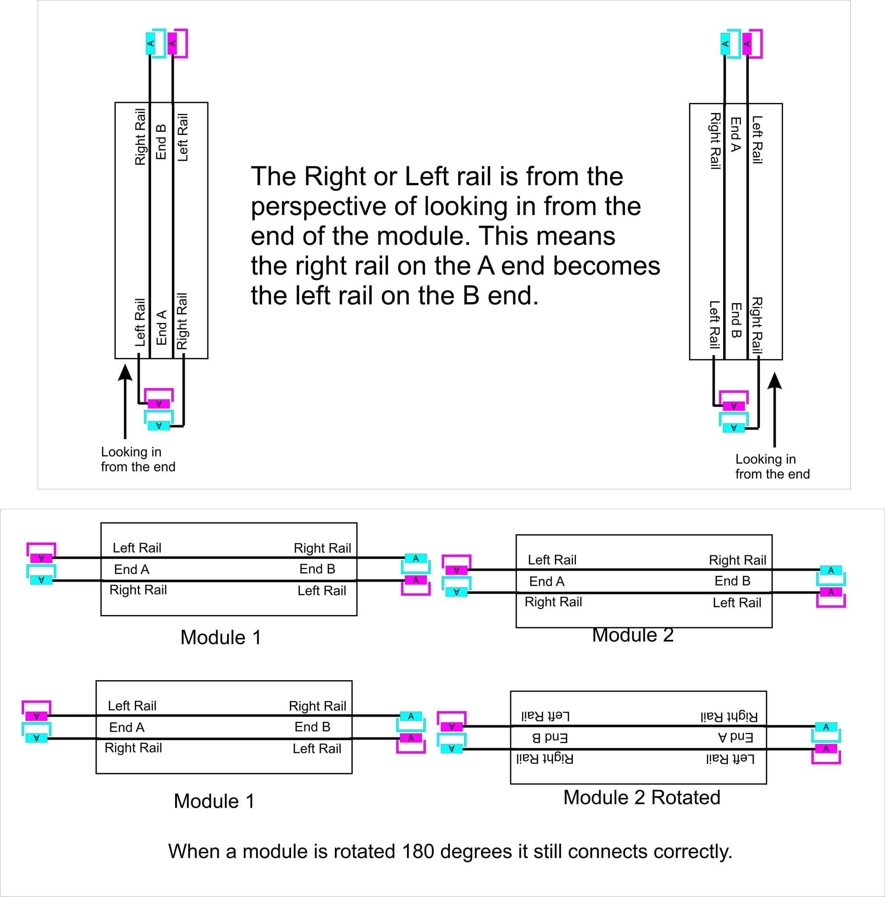

Standards and Recommendations
Version 202209xx- Overview
- Objectives
- Definitions
- 1.0 Framework
- 2.0 Track
- 3.0 Electrical
- 4.0 Scenery
- 5.0 Equipment
- 6.0 Miscellaneous
- Revision History
Overview
As Free-moN has grown lots of people have asked this question. We are open to change, but a standard that changes too easily or fast cannot be followed. Many groups are following this standard and it works. When there has been a real need to change, it has changed and will change if needed.
When the Standards do change it will not be done lightly. As a follower of the standard you agree to change with the standards as they change and grow.
When you decide to build modules to an existing standard, you, by freely deciding to adopt that particular standard, have accepted those standards as written. By choosing to adopt the Free-moN standard you have chosen to build modules that will connect with others building to this standard and will take design decisions that allow your module to connect to all others and to run trains across them, even those that use features of the standard that your particular module(s) may not.
Free-moN has a five member steering committee that is empowered to update the standard. When the Standards do change it will not be done lightly. The committee takes input from the Free-moN community (everyone building modules to the Free-moN standard) when considering a potential change and what changes to consider. As someone building to the Free-moN standard you agree to update your modules as the standards change and grow. Of course you always have the option to select a different standard that is better suited to your needs.
Objectives
Definitions
Yes! Modules consist of one or more sections. Each module must have at least 1 Free-moN compliant module end plate. There are restrictions to how and how many tracks may cross a module end plate. These restrictions assure that modules can connect to other modules and trains can operate smoothly when crossing between modules.
Sections allow modules to be taken apart into transportable pieces. Section ends (that are not module end plates) do not have the same restrictions as module end plates. This additional freedom is critical for building transportable modules that contain yards, continuous broad curves, industrial trackage, etc. The distinction between module ends and section ends makes Free-moN much more free.
Although the “Section ends” do not have to conform to the Free-moN standard in any way, it’s recommended that the construction standards be followed if possible. Using a thinner endplate or crossing closer to the edge could certainly lead to operational issues. Wiring between sections isn’t covered by the standard at all; some people continue to use APP connectors and some use other “Proprietary” means. As long as it’ll handle the current, whatever works is fine.
1.0 Framework
1.1 Endplates
1.2 Legs & Bracing
1.3 Surface
1.4 Fascia & Skirting
2.0 Track
It is “Recommended” to follow the standard, i.e. #6 turnouts and 22 inch radius, everywhere if possible. If it’s NECESSARY, smaller turnouts & sharper curves (and smaller code track, etc) can be used outside of the mainline but this should be avoided unless it either matches the prototype, or technical needs require it (e.g. size/space issues). Keep the objectives “To promote and require hi-fidelity prototypical scale model railroading” and “To ensure reliable track and electrical operation” in mind, on and off the mainline.
First, Peco code 55 track is actually code 80 rail buried part way into the ties.
Second, Peco, being a British company, builds track for British n-scale, which is 1:148 scale, but Free-moN is typically used for North American N-scale, which is 1:160 scale. Because of the scale difference, the tie spacing is wrong for North American track.
Finally, Peco track follows the NEM standards, but Free-moN requires rolling stock to meet NMRA standards (See S5.1). Because of this, the flangeways on Peco turnouts, and other special track, are too wide for NMRA standard wheelsets. Using Peco turnouts leads to increased derailments.
3.0 Wiring & Electrical
3.2 Turnouts
- Manual control (ground throws, slide switches) are simple, but it’s going to mean people are reaching into your scenery - there’s a potential for damage!
- Fascia control is safer for your scenery, but keep in mind that modules don’t have a “public side” or “private side.” They can be controlled from either side, so if using fascia control it should be controllable from all sides.
- DCC control is possible, but not all throttles support DCC accessory control (e.g. the Digitrax UT4 series). So, local control should also be provided.
- Remember that frog power control is required by S3.2.1. Using your turnout control method to also switch polarity tends to be the easiest & cheapest solution, though there are also devices that will detect a loco and switch the frog automatically (Frog Juicer, AutoFrog, Frog-AR, etc).
3.3 Main Line Track Bus
12 AWG specified in the standards may be overkill in some ways, but part of the reason it was selected in the first place was it can reduce the number of boosters needed on the layout without compromising the ability to detect shorts. Wire is still cheaper than another booster.
For the technical explanation, in order to reliably detect a short at the end of a booster district, the resistance of the wire needs to be kept low enough that we don't have a voltage drop of more than 0.5 volts at the end of the power district when we have a 5 amp short on the track (using the so called quarter test can induce this).
Using Ohms Law, this means the total resistance from the booster to the end of the district needs to be under 0.5 volts/5 amps = .1 ohm.
12 AWG wire has a resistance of .002 Ohms per foot and 14AWG wire has a resistance of .003 Ohms per foot. For 14 AWG wire, the maximum distances is .1 ohm/ .003 ohm/foot = 33.33 feet. For 12 AWG wire, the maximum distance is .1 ohm/.002 ohm/foot = 50 feet. This means a single booster placed in the center of a district can safely power up to 100 feet of track with 12 gauge wire, but only 66.66 feet of track using 14 gauge wire. In practice, we try to make our booster districts slightly smaller than the maximum limits to accommodate other sources of resistance (connectors, feeder wire, etc) in the circuit.
On a large layout, this difference can significantly increase the cost of powering the layout. For example, if we have 1000 feet of track using 12 AWG wire for the bus, we need a minimum of 10 boosters to adequately power the track. With 14 AWG wire for the bus, we need a minimum of 15 boosters to safely power the same amount of track.
The following drawing, provided by Bob Schrempp provides a nice graphical explanation of the connectors.
